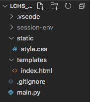

23.7. Exercises: Flask Sessions¶
In these exercises you will build a Flask app that uses sessions to run a number guessing game.
23.7.1. Part A: Clone the Repository¶
To save you some time, clone the starter code from this GitHub repository.
Follow the same steps you used earlier in this chapter to download the project files, create a new virtual environment, install Flask, and commit your changes.
Note
In the .gitignore file. Be sure to replace the entry in line 1 with the name of your new virtual environment.
When ready, the project file tree should look something like this:
The name you gave to your virtual environment will appear instead of
session-env.¶Launch
main.py, and open the Flask app in a browser tab. You should see a plain looking web form.
{kind=link}
23.7.2. Part B: Set the Numbers¶
Your first task is to save three numbers to the session object: the
magic_number players need to guess, and the high and low values for the
guessing range.
Open
main.pyin Visual Studio Code. Notice that variables forlow_value,high_value, andmagic_numberare already set.13 14 15
low_value = 1 # Sets the low end of the guessing range. high_value = 50 # Sets the high end of the guessing range. magic_number = random.randint(low_value, high_value)
Line 15 randomly selects an integer from within the range and assigns it to the
magic_numbervariable.Refactor line 15 to save the random integer to the
sessionobject. Usemagic_numberas the key.15
session['magic_number'] = random.randint(low_value, high_value)
On lines 16 and 17, save the low and high values to the session object. Remember to use descriptive key names!
By storing the three numbers in the session, you do NOT need to pass the values
to index.html from the render_template() function.
23.7.2.1. Display the Number Range¶
Open the index.html file. Notice that the label for the input box always
displays the same text, Guess a number between 1 and 100.
Replace the
1and100with placeholders. Inside each set of braces, use the session object to access the low and high ends of the guessing range.Save the changes, then reload the webpage. Does the label now show a range from 1 to 50? If not, adjust your placeholder syntax until it does.
Return to
main.pyand change the numbers assigned tolow_valueandhigh_value. After saving, reload the webpage. The input box label should change to match your new numbers.When your page correctly displays the numbers saved to the session, stop the program and commit your code. You’re ready to move on.
Tip
Did you change the Form title goes here text? You weren’t given any
instructions to do so. However, at this point in the class, we shouldn’t
need to tell you how to fix every minor thing!
23.7.3. Part C: Check User Guesses¶
In main.py, replace the pass keyword on line 11 with code that deals
with a user’s guess.
Your code should:
Collect the user’s guess from the form and convert it to an integer. Note that in
index.html, theinputtag contains the attributename="guess".Access the low, high, and magic number values from the session as needed.
Check if the guess is within the required range. If
False, reload the form and display an error message. This should appear instead of theFeedback messages will go heretext.If
True, compare the user’s guess tomagic_number.If the guess is too low, reload the form with the proper feedback message.
If the guess is too high, reload the form with the opposite feedback message.
If the guess is correct, reload the page with a victory message!
When the user’s guess is less than the magic number, reassign the low value stored in the session. This should update the input label on the form.
When the guess it too high, reassign the top value stored in the session.
When done, your app should behave like this:
Wow! Three tries (not counting invalid entries).¶
Take a moment to save and commit your work!
23.7.4. Part D: Finalize Form¶
After the user guesses the correct number, what then? Obviously, the application should not keep taking guesses!
In
main.pycreate a session variable calledstill_guessing.Initially,
still_guessingshould beTrue. However, when the user guesses correctly, the value should flip toFalse.Add some Jinja3 logic to the
index.htmltemplate. Ifstill_guessingisTrue, display the original form. WhenFalse, display a different form.The second form should contain a single
Play Againbutton. When clicked, the page sends aGETrequest to the server. This will reset the guessing range and assign a newmagic_numbervalue.
{kind=link}
Don’t forget to save and commit your work!
23.7.5. Part E: Optional Updates¶
Your Flask app now functions as a simple number guessing game. However, this doesn’t mean the project is completely finished! There are a number of improvements you can make to practice the skills you learned earlier in this course.
Feel free to try some of these:
Use CSS to make the form, feedback messages, etc. nice to look at.
Add a counter to keep track of how many tries it takes to guess the correct number.
Add a
Start Overoption to let users reset the game before they guess correctly.Randomly select the high and low values for the guessing range.
In
main.py, add some server-side validation to make sure the user submits an integer.Convert the game to rock-paper-scissors!